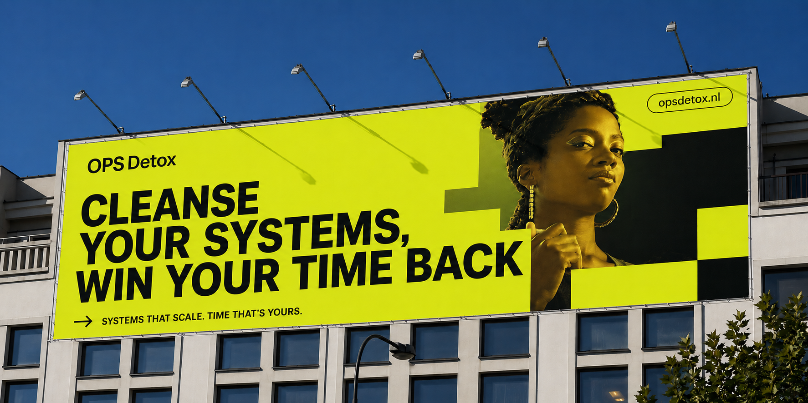

Uncomfortable honesty
The expensive thing gets said out loud, early.
Founder, OPS Detox™TEDx speaker17 years inside complex international organizations
Founder of OPS Detox™. Seventeen years inside complex, international organizations — and the conviction that the truth is always already in the building.
For seventeen years I worked inside Sony Europe, across sales, marketing, procurement, business planning, operational excellence, reporting and transformation. What I saw there, I now see in every growing company: good people, working hard, inside systems that piled up as the company grew. The truth was always in the building. It simply could not reach the people who could act on it.
Every hour a good person spends in a meeting without a decision, on a report nobody reads, or waiting for permission they should already have, is an hour of a life. OPS Detox exists to clear that clutter and give those hours back.
— Oscar de Grauw, Founder of OPS Detox™

The expensive thing gets said out loud, early.
Fewer moving parts, named owners, visible decisions.
Every process has someone who can act on it.
Implementation, not a report.
Stripping things out takes more nerve than adding them.
From the inside out, not an outsider with a framework.
My work is built on proprietary frameworks, so you get a repeatable, structured approach that scales.